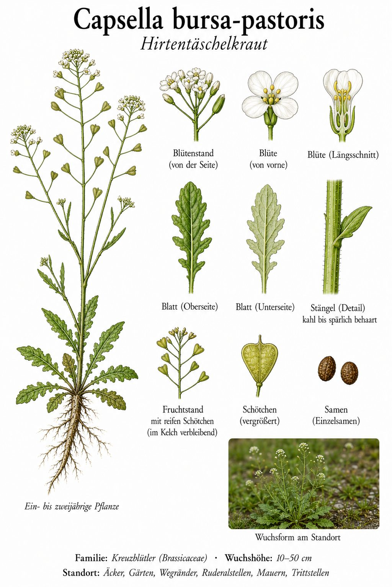
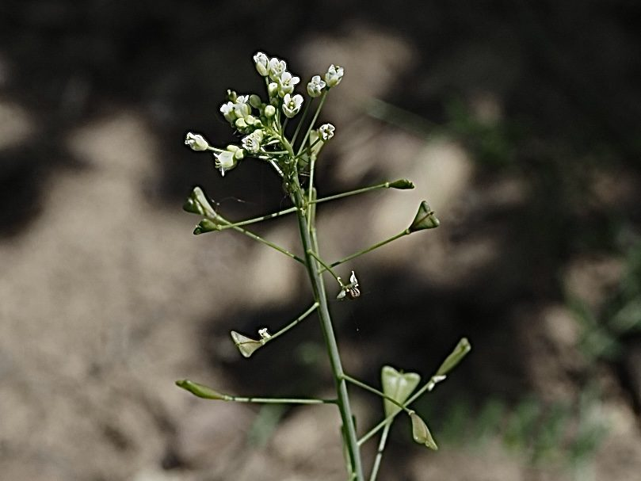

Täschchen am Wegrand
Unscheinbar, aber überall: Das Hirtentäschel trägt seine winzigen, vierzähligen weißen Blüten in lockeren Trauben – und darunter schon die reifen Früchte. Diese sind herzförmig-dreieckig abgeflacht und sehen aus wie kleine Taschen, wie sie Hirten früher am Gürtel trugen. Daher der Name. Man findet die ein- bis zweijährige Pflanze auf Äckern, in Gärten, an Wegrändern, auf Ruderalstellen, Mauern und Trittstellen – praktisch in jeder Ritze.
Weltbürger und Selbstversorger
Das Hirtentäschel ist eines der häufigsten Wildkräuter der Erde. Sein Erfolgsgeheimnis: Es bestäubt sich überwiegend selbst und ist damit unabhängig von Insekten und Wetter. So kann es vom ersten milden Tag bis in den Spätherbst blühen und in kurzer Folge mehrere Generationen bilden. Die jungen Blätter sind essbar und schmecken leicht kohlartig.